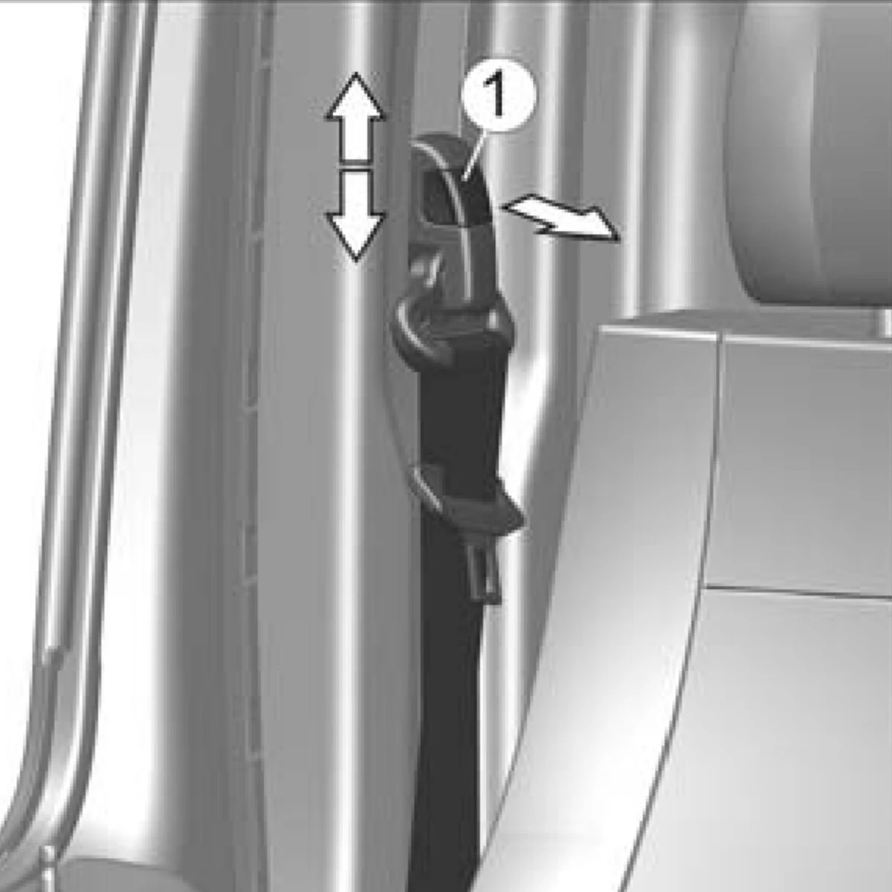
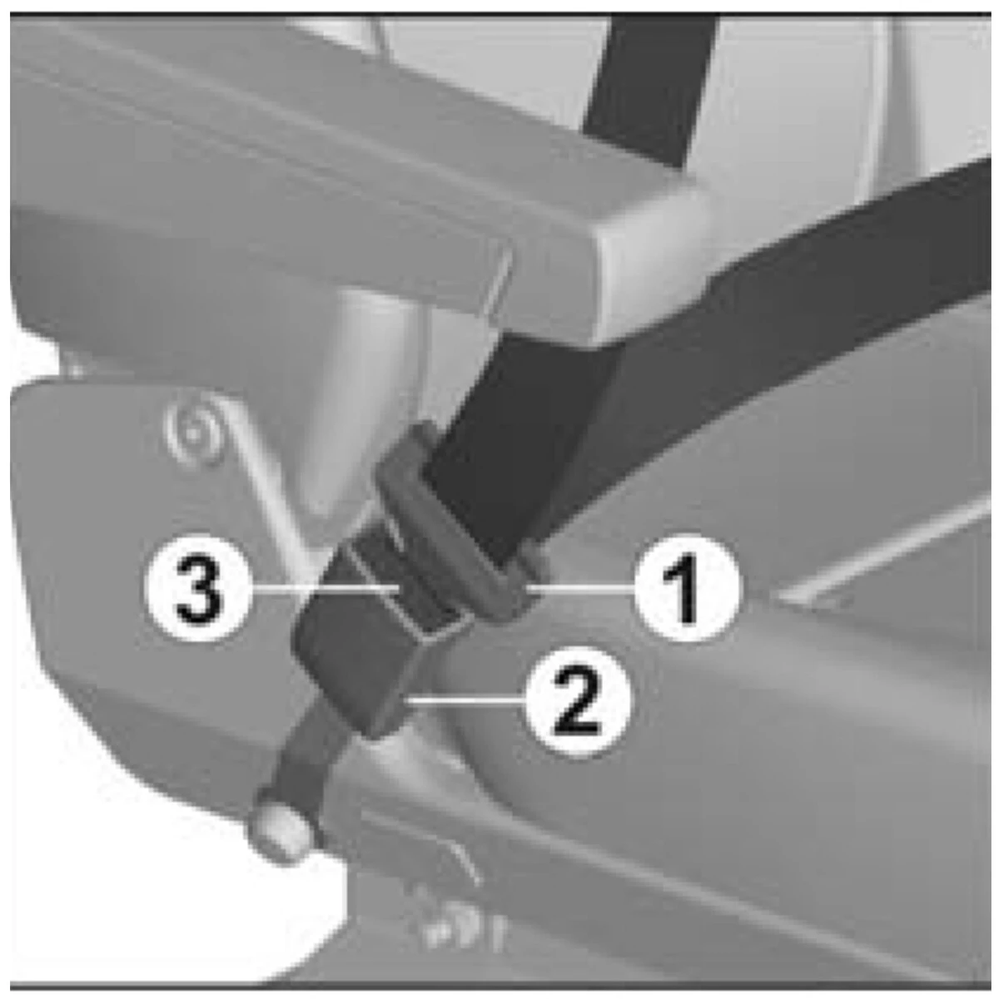

Ремни безопасности
Описание автомобиля
Ремни безопасности
- Ремни безопасности являются эффективным средством защиты водителя и пассажиров от тяжёлых последствий дорожно-транспортных происшествий.
- Автомобили комплектуются тремя типами ремней:
- трёхточечными (диагонально-поясными) с инерционными катушками,
- двухточечными (поясными) статическими с ручной регулировкой длины ленты
- двухточечными (поясными) с инерционной катушкой.
- Диагонально-поясные ремни, а также двухточечные (поясные) ремни с инерционной катушкой не нуждаются в регулировке.
- В случае поясных статических ремней необходима индивидуальная регулировка длины лямки ремня, при этом поясная лямка должна плотно прилегать к бёдрам. Изменение длины лямки осуществляется регулятором.

Регулировка положения ремня безопасности
Ремни безопасности водителя и переднего правого пассажира оснащены механизмами, позволяющими отрегулировать верхнюю направляющую ремня безопасности по высоте, обеспечивая тем самым удобство пользования ремнем людям различных ростовых групп. Крайние диагонально-поясные ремни безопасности второго ряда сидений указанными механизмами не оснащаются. Для регулировки положения верхней направляющей потяните на себя кнопку 1 и одновременно двигайте ее либо вверх, либо вниз по необходимости.

Пристёгивание ремнём безопасности
- Для пристёгивания ремнём медленно (без рывков) потяните ленту ремня за язычок 1, чтобы её длина по груди и бёдрам была примерно одинаковой, и вставьте его в соответствующий данному сиденью замок 2 до характерного щелчка.
- Верхняя часть ремня должна проходить через середину плеча, и ни в коем случае через шею или под рукой, и должна плотно прилегать к верхней части туловища.
- Поясная часть ремня должна лежать как можно ниже и всегда плотно прилегать к бёдрам. В противном случае следует отпустить ремень и потянуть его.
- Для освобождения ремней нажмите на красную кнопку 3 соответствующего замка. При этом язычок будет вытолкнут пружиной из своего гнезда. Отведите ленту ремня за язычок рукой назад, чтобы механизму было легче её смотать.
- Ремнями безопасности должны пристёгиваться и беременные женщины. Необходимо помнить, что лента ремня должна располагаться таким образом, чтобы избежать любого давления на живот. Поясная часть ремня должна располагаться ниже живота.
⛔ ОПАСНО!Ремни, которые испытали большую нагрузку при дорожно-транспортном происшествии или которые имеют потёртости, разрывы и другие повреждения, должны быть обязательно заменены на соответствующие новые ремни безопасности в сборе. Недопустимы любые изменения в конструкции ремней безопасности. Нельзя вдвоём пристёгиваться одним ремнём, особенно недопустимо пристёгивать ремнём ребёнка, сидящего на коленях пассажира.
Руководство по эксплуатации автомобиля GAZel Next
Полная одностраничная версия заводской инструкции
Перейти Рекомендуем